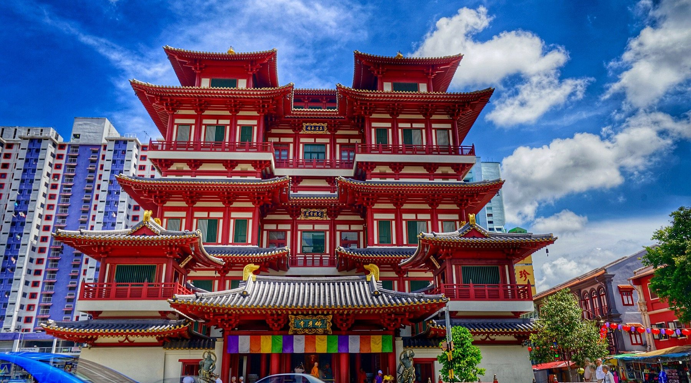
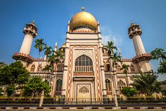

288 South Bridge Road, Singapore 058840
Plays a vital role in the Buddhist, cultural and heritage landscape in Singapore and is an outstanding centre of Buddhist art and culture.
Learn more3 Muscat Street, Singapore 198833
Masjid Sultan, also referred to as Sultan Mosque, is a widely known religious landmark in Singapore. This mosque, which can be found in the Kampong Glam district at the intersection of North Bridge Road and Muscat Street, is highly significant in terms of both history and culture.
Learn more